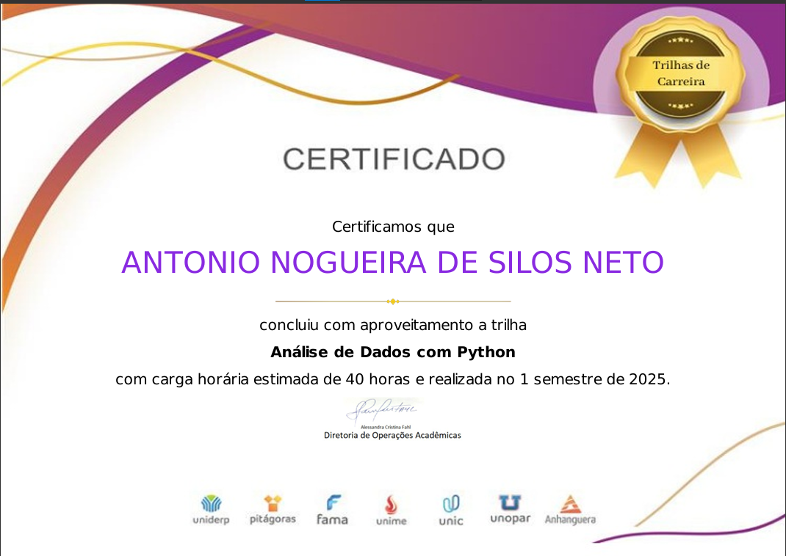
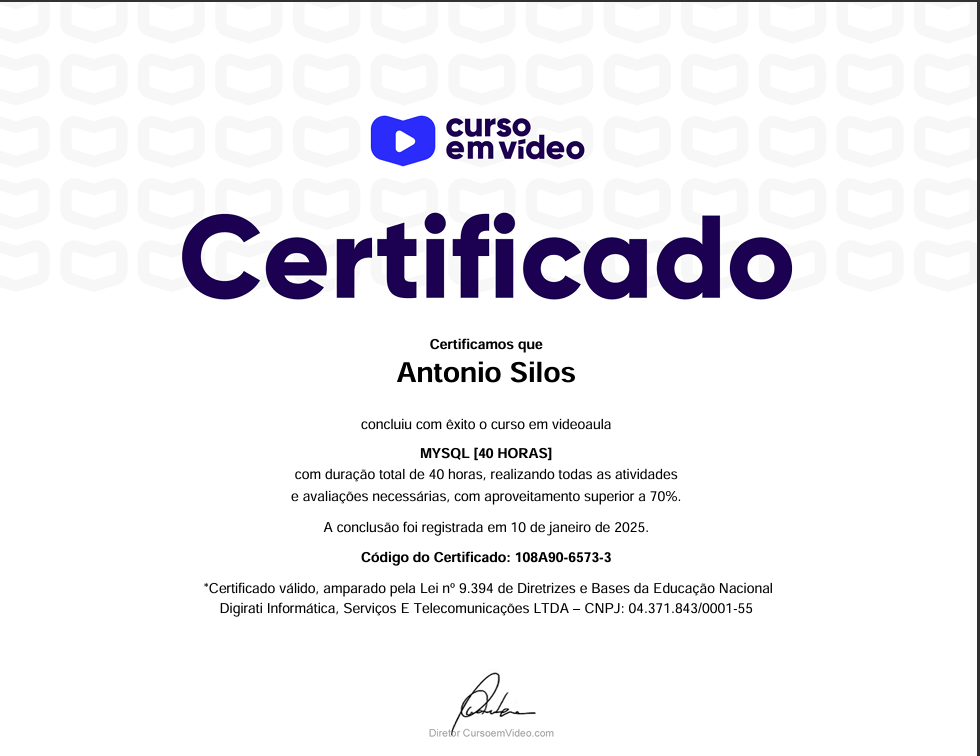
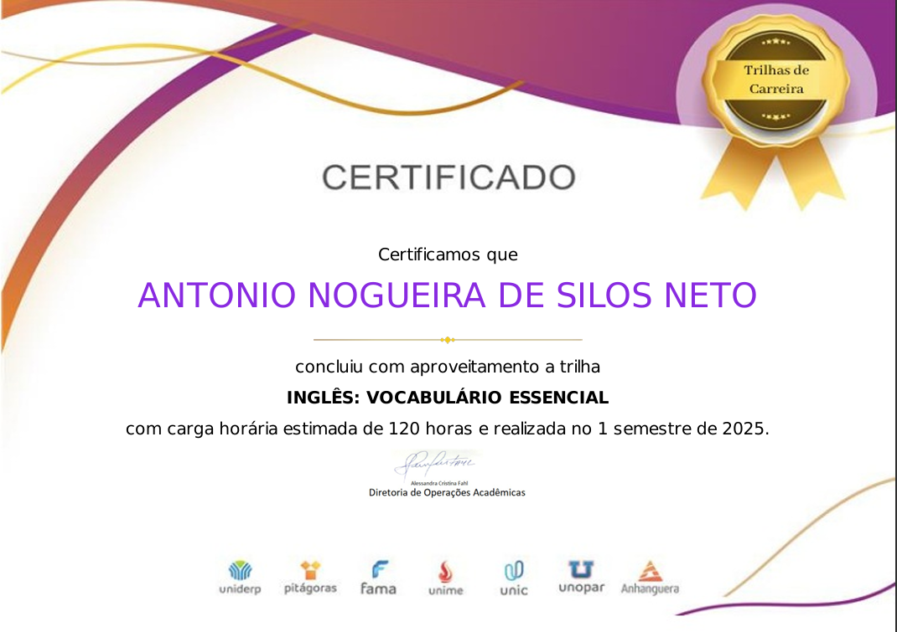

Sobre Mim
Sou um desenvolvedor Jr. apaixonado por tecnologia e criação de soluções interativas. Tenho experiência prática com Python, MySQL, HTML5, CSS3 e JavaScript, além de vivência com bibliotecas como Pygame, Pandas, Pyautogui, Playwright, e frameworks como Flask, Django e Bootstrap.
Minha trajetória profissional inclui atuação no levantamento de requisitos e contato direto com clientes, o que fortaleceu minha comunicação e visão analítica. Sou uma pessoa curiosa, criativa e focada, sempre em busca de aprender sempre mais e aprimorar minhas habilidades.
Meu objetivo é crescer na área de desenvolvimento de soluções capazes de gerar conexão e praticidade, aliando minhas competências técnicas à capacidade de compreender as necessidades dos usuários, para entregar experiências funcionais e intuitivas.
Stacks e Habilidades
Do front-end à IA, uno desenvolvimento e análise de dados para transformar ideias em soluções funcionais.
-
Desenvolvimento Front-end
Atuo no desenvolvimento de interfaces responsivas e intuitivas utilizando HTML5, CSS3 e JavaScript, com foco em experiência do usuário e design limpo. Tenho prática na criação de páginas de login estilizadas, réplicas funcionais de grandes plataformas (como Netflix) e em projetos de sites informativos e institucionais, explorando responsividade, grids flexíveis e animações para valorizar a usabilidade e a estética.
-
Desenvolvimento Back-end
Experiência no desenvolvimento de aplicações Python (Flask), incluindo integração com bancos de dados MySQL, autenticação de usuários e funcionalidades dinâmicas em sistemas web. Já construí soluções que conectam o frontend a serviços do backend, explorando boas práticas em arquitetura fullstack e visando escalabilidade e segurança.
-
Banco de dados
Vivência em modelagem e administração de bancos relacionais (MySQL), com práticas desde a criação de schemas completos até a execução de consultas SQL otimizadas para análise de dados. Experiência em projetos acadêmicos e práticos, como a construção de bancos de dados para sistemas de gestão SaaS e integração com aplicações web, garantindo consistência e desempenho.
-
Machine Learning
Interesse consolidado e prática em Python para análise de dados, com projetos que envolvem automação, raspagem de dados e organização em Excel. Estudo técnicas de machine learning e IA aplicada, visando desenvolver soluções que apoiem a saúde mental e a análise de informações estratégicas. Busco alinhar o potencial da IA com necessidades reais, transformando dados em insights de valor.
Tecnologias utilizadas
Currículo
Experiência
-
Analista de Suporte Técnico – Grupo SIGMA Software
-Cargo atual
Nesta posição, atuo como a ponte entre o usuário e a tecnologia, fornecendo suporte técnico de 1º e 2º nível para sistemas ERP. Mais do que resolver problemas, esta experiência aprimorou minha capacidade de diagnosticar falhas lógicas e de sistema, uma habilidade essencial para o debugging e para a criação de código robusto. A constante interação com os usuários me ensinou a importância da empatia e da comunicação clara, fortalecendo minha capacidade de traduzir termos técnicos complexos para uma linguagem acessível. A cada chamado, aprimoro minha visão de como um software pode ser mais amigável e eficiente, alinhando a técnica à experiência do usuário, o que me motiva a buscar a excelência no desenvolvimento de soluções.
-
Analista Comercial – Grupo SIGMA Software
-Nessa função, atuei na linha de frente do desenvolvimento de soluções, focando no levantamento de requisitos e na análise de processos de negócio. Mais do que vender um produto, minha missão era entender a fundo as dores e necessidades dos clientes, traduzindo-as em soluções de gestão empresarial. Essa experiência me deu uma visão estratégica de negócios e aprimorou minha escuta ativa, habilidades que considero cruciais para um desenvolvedor. Entender a fundo o problema antes de propor a solução técnica me permite construir sistemas mais eficazes e alinhados aos objetivos do usuário, unindo o mundo da tecnologia ao mundo dos negócios de forma harmoniosa.
-
Fiscal de Caixa – Cobasi
-Minha primeira imersão na logística de uma empresa e no mundo da tecnologia. Nesta posição, liderei uma equipe de frente de caixa e gerenciei processos de vendas em um robusto sistema ERP. Foi aqui que, indiretamente, comecei a desenvolver meu olhar crítico para a experiência do usuário. O uso diário de um software de gestão me fez entender, na prática, a importância de cada detalhe: desde a fluidez dos processos até a clareza da interface. Essa experiência me deu a certeza de que um software eficiente e amigável é a chave para a produtividade. Hoje, essa visão me motiva a criar soluções que não apenas funcionem, mas que também ofereçam uma experiência intuitiva e que facilite o dia a dia dos usuários, unindo eficiência operacional à qualidade no atendimento.
Formação Acadêmica
-
UNOPAR Anhaguera - Polo de Araçatuba - SP
Formação sólida para atuar em desenvolvimento de software, com foco em análise de requisitos, modelagem de sistemas, programação, banco de dados e testes. Fui capacitado a criar soluções tecnológicas que atendem às demandas do mercado, com habilidades práticas para atuar em equipes de desenvolvimento, solucionando problemas e inovando processos. Preparado para contribuir na construção de sistemas eficientes e escaláveis.
-
Escola Estadual José A. de Paula
Ensino Médio - Formação generalista que desenvolveu minha base crítica, raciocínio lógico e habilidades interpessoais, preparando-me para enfrentar desafios com disciplina, adaptabilidade e vontade constante de aprender.
Certificações
-

Análise de dados com Python
Capacitação prática em manipulação, limpeza e análise de dados utilizando bibliotecas como Pandas, NumPy e Matplotlib. Desenvolvimento de habilidades para transformar dados brutos em insights valiosos, apoiando a tomada de decisões estratégicas com base em análises eficientes e visualizações claras.
-

Desenvolvimento e Gerenciamento de Banco de Dados com MySQL
Certificação prática em modelagem, criação e gerenciamento de bancos de dados relacionais utilizando MySQL. Conhecimento aplicado em consultas SQL, manipulação de dados e estruturação eficiente de informações para suportar sistemas e aplicações.
-

Língua Inglesa
Aprendizado sobre as principais palavras e expressões fundamentais para comunicação eficaz em inglês, ampliando a fluência e a compreensão em contextos cotidianos e profissionais.
Meus Projetos
-
Página de login da Netflix personalizada
-
Página de feliz aniversário com quiz inicial
-
Projeto Python + Previsão com I.A
-
Jogo em 2D usando Pygame
-